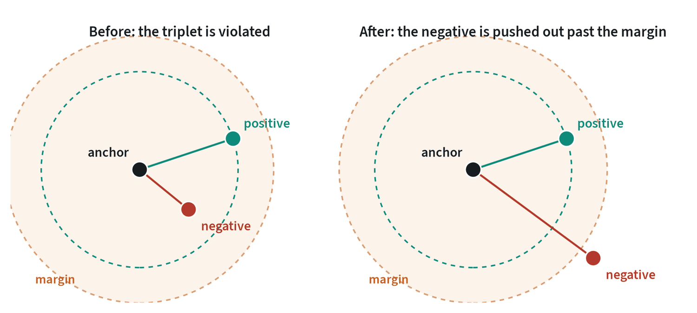
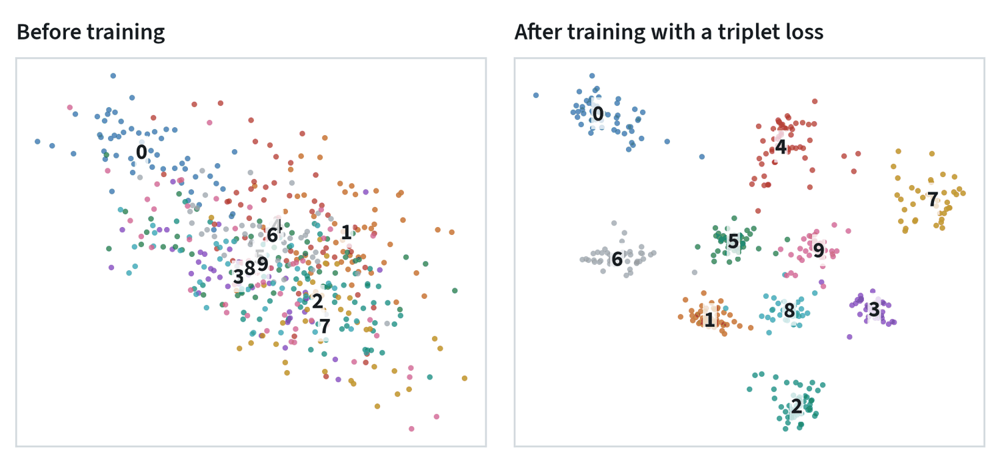
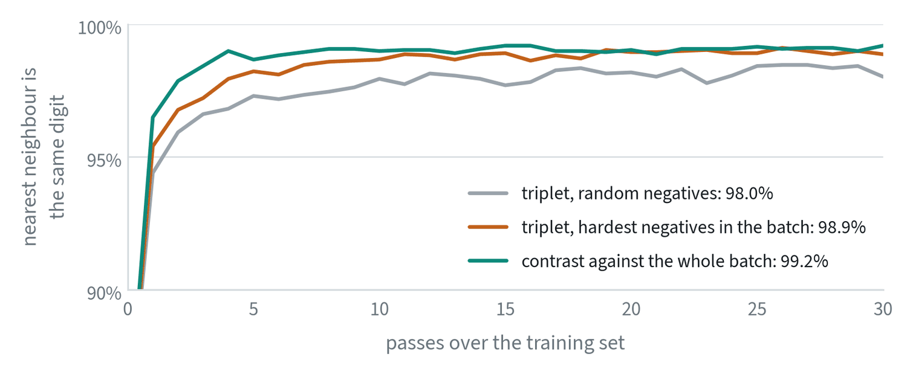
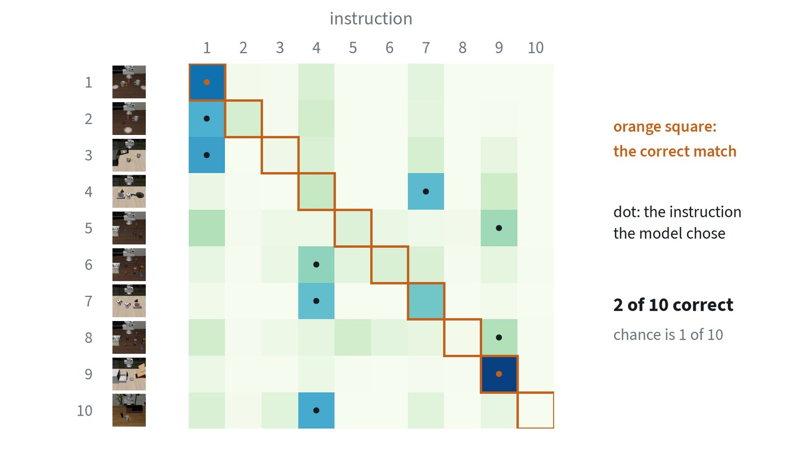

Learning by comparison
Most losses compare a prediction with a correct answer. A contrastive loss needs no answer at all. It is told only which things belong together, and it shapes an embedding space so that those land close and everything else lands far apart.
That is enough to learn a great deal, because “belong together” is cheap to obtain. Two photos of the same product belong together. An image and its caption belong together. A camera frame and the touch reading recorded in the same instant belong together. The second and third are how models are taught to relate different kinds of data, which is what multimodal learning means.
The losses


The triplet loss works on three items at a time: an anchor, a positive that should be near it, and a negative that should not.
L = max( 0, d(anchor, positive) − d(anchor, negative) + margin )
The loss is zero once the negative is further away than the positive by the margin. That zero is its weakness as well as its point. Most randomly chosen triplets already satisfy it and teach nothing, so training depends on finding the triplets that do not. That search is called mining.
| Loss | Compares | Strength | Weakness |
|---|---|---|---|
| Contrastive (pairwise) | Two items: pull together if matched, push apart up to a margin if not | Simplest | Uses little of each batch |
| Triplet | Anchor, positive, negative | Directly states the ranking wanted | Most triplets are uninformative; needs mining |
| InfoNCE | One positive against every other item in the batch, as a classification | Uses every negative in the batch; no mining | Wants large batches; has a temperature to tune |
| Supervised contrastive | As InfoNCE, with every same-class item as a positive | Uses labels when they exist | Needs labels |
| Sigmoid (SigLIP) | Every pair in the batch, each as its own yes or no | Works at small and very large batch sizes | Needs a bias term and care with the many negatives |
InfoNCE is the loss behind CLIP. Take a batch of N matched pairs. For each item, compute its similarity to all N candidates, divide by a small number called the temperature, and apply cross entropy with the true partner as the correct class.
L = − log [ exp( sii ÷ τ ) ÷ Σj exp( sij ÷ τ ) ]
Every other item in the batch is a negative for free, which is why these models are trained with batches of thousands. The temperature sets how hard the loss concentrates on the most confusing negatives: a low value attends almost only to the hardest ones.
Three losses on the same data




Two lessons hold beyond this small case. Choosing negatives matters: taking the hardest ones in each batch cut the error of the triplet loss roughly in half, from 2.0% to 1.1%. And contrasting against the whole batch did a little better again, and learned fastest, with nothing to mine. This is why InfoNCE-style losses displaced triplets for large-scale pretraining, and why triplets with hard mining remain common where data is labelled and batches are small.
What the loss does to the space
With embeddings normalised to unit length, every point lies on a sphere and similarity is the cosine of the angle between two points. A contrastive loss can then be understood as pursuing two goals at once.
Alignment pulls matched pairs together. Uniformity spreads all points evenly over the sphere, which preserves as much information as possible. In the InfoNCE loss the numerator is the alignment term and the denominator, summed over the batch, is the uniformity term. This also explains collapse: alignment alone is minimised by mapping everything to one point, and it is the negatives that prevent it.
For two modalities the loss is applied in both directions and averaged. With image embeddings , text embeddings and a learned temperature :
The sigmoid variant drops the softmax and treats every pair in the batch as its own yes-or-no question, with a label of +1 on the diagonal and −1 elsewhere:
Because no term depends on the rest of the batch, the loss can be computed in pieces across machines, which is why it scales to very large batches and also works at small ones.
How much do temperature and batch size matter? On the small digits problem above, not at all: sweeping the temperature from 0.01 to 1 moved retrieval accuracy only between 98.5% and 99.1%, and batch sizes from 8 to 256 between 98.2% and 98.9%. They matter at scale, where the supply of hard negatives in a batch is what limits learning. A hyperparameter’s reputation comes from the regime it was studied in.
Two modalities, one space
Apply the same loss across two kinds of data and the result is a shared embedding space. CLIP has an image encoder and a text encoder, and trains them so that an image and its caption land at the same point. Afterwards a picture can be compared with a sentence directly, which gives recognition from a text description with no training on the classes involved.


The result is a useful warning. The same model recognises everyday photos very well. It fails here for three reasons that recur in robotics. The scenes are nearly identical tabletops that differ in small objects. The instructions are long and compositional, and a single vector cannot hold “the white mug on the left plate and the yellow mug on the right”. And the images are simulated, which is far from what the model was trained on. Matching one vector against one vector is a blunt instrument, and this is the main reason robot models use the vision encoder’s patch features inside a language model instead. The note on vision-language models picks up there.
Beyond images and text
- More senses. The same recipe aligns sound, depth, touch and motion with images. Because each is paired with images, they become comparable with each other without ever having been paired directly.
- Time. Frames close together in a video are positives and distant frames are negatives. The embedding learns what changes slowly, which is often the task-relevant state.
- Views. Two cameras looking at the same moment form a positive pair, which teaches features that do not depend on viewpoint.
- Touch and vision. A fingertip image and the camera image of the same contact, paired, give a touch encoder a starting point that does not depend on scarce labelled touch data.
How it goes wrong
- Collapse. If nothing pushes points apart, mapping everything to one point satisfies the loss. Negatives prevent it, and methods without negatives need another device, as the representation learning note shows.
- False negatives. Two different images of the same thing in one batch are treated as a mismatch and pushed apart. It worsens as batches grow.
- Shortcuts. If positives share something trivial, such as the same background or camera, the model learns that and nothing else.
- The modality gap. Even after training, images and texts tend to occupy separate regions of the shared space. Distances across modalities are meaningful only in relative terms.
Common mistakes
- Training a triplet loss without mining. Most triplets contribute nothing after the first few passes.
- Leaving the temperature at a default. It changes which negatives matter and is worth tuning.
- Expecting one vector to carry a sentence. Fine for “a photo of a mug”. Not for a multi-step instruction.
Terms
- Embedding
- A vector that represents an item so that similar items are close.
- Positive and negative
- Items that should and should not be close to the anchor.
- Hard negative
- A negative that the model currently places close to the anchor.
- Mining
- Selecting informative pairs or triplets to train on.
- Temperature
- A scale applied to similarities before the softmax; lower values sharpen the focus on the hardest negatives.
- Modality gap
- The tendency of different data types to occupy separate regions of a shared embedding space.
- Alignment and uniformity
- The two things a contrastive loss optimises: matched pairs close together, and all points spread evenly.
Further reading
- Schroff et al., 2015. FaceNet: A Unified Embedding for Face Recognition and Clustering (triplet loss).
- Hermans et al., 2017. In Defense of the Triplet Loss for Person Re-Identification.
- van den Oord et al., 2018. Representation Learning with Contrastive Predictive Coding (InfoNCE).
- Khosla et al., 2020. Supervised Contrastive Learning.
- Radford et al., 2021. Learning Transferable Visual Models From Natural Language Supervision (CLIP).
- Zhai et al., 2023. Sigmoid Loss for Language Image Pre-Training (SigLIP).
- Girdhar et al., 2023. ImageBind: One Embedding Space To Bind Them All.
- Wang and Isola, 2020. Understanding Contrastive Representation Learning through Alignment and Uniformity on the Hypersphere.